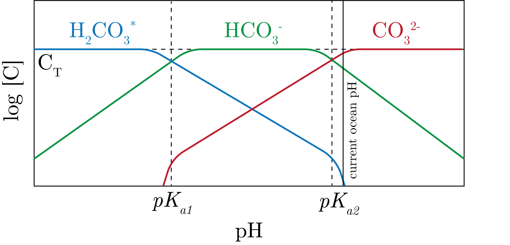

The following are important reservoirs of carbon in the Earth system in [GT]:
Deep ocean: 37100
Fossil fuels: 3700
Terrestrial: 2300
Upper ocean: 900
Atmosphere: 597
Surface sediments: 150
Marine biota: 3
Despite the small biota contribution that is cycling, the actual fluxes are massive.
The Carbonate System in Seawater
We define the total carbon as:
\begin{equation}
C_T = T_{\text{CO}_2} = \sum \text{CO}_2 = \text{DIC} = \left[\text{H}_2\text{CO}_2^\ast\right] + \left[\text{HCO}_3^-\right] + \left[\text{CO}_2^{2-}\right],
\end{equation}
where we define:
\begin{equation}
\text{H}_2\text{CO}_3^\ast = \text{CO}_2 (aq) + \text{H}_2\text{CO}_3.
\end{equation}
The equilibrium is given by:
\begin{equation}
\text{CO}_2 (aq) + \text{H}_2\text{O} \leftrightharpoons \text{H}_2\text{CO}_3.
\end{equation}
We get that, for the conditions of seawater (i.e., pH and carbonic anhydrase) only about 0.15% of $\text{H}_2\text{CO}_3^\ast$ is actually $\text{H}_2\text{CO}_3.$
Therefore, this terms only contributes carbon dioxide.
We can then define the activity coefficients as:
\begin{equation}
K_{a_1}^\ast = K_{a_1}' \frac{\gamma_{\text{H}_2\text{CO}_3}^T}{\gamma^T_{\text{HCO}_3^-}} \quad \text{ and } \quad K_{a_1}^\ast = K_{a_1}' \frac{\gamma_{\text{H}\text{CO}_3^-}^T}{\gamma^T_{\text{CO}_3^{2-}}},
\end{equation}
where we have that the primes represent the freshwater activity coefficients.
We next remember our concentration equilibrium constants as:
\begin{equation}
K_{a_1} = \frac{\left[\text{H}^{+}\right]\left[\text{HCO}_3^{-}\right]}{\left[\text{H}_2\text{CO}_3^{\ast}\right]} \quad \text{ and } \quad K_{a_2} = \frac{\left[\text{H}^{+}\right]\left[\text{CO}_3^{2-}\right]}{\left[\text{HCO}_3^{-}\right]}.
\end{equation}
We can put some numbers on these as:
\begin{align}
pK_{a_1}&: 6.3, 6.0 \\
pK_{a_2}&: 10.3, 8.9
\end{align}
for freshwater, saltwater.
The DIC System in $\log\left[C\right]$-pH Space
The result is presented in Fig. 1.

Fig. 1: The DIC system in $\log\left[C\right]$-pH space.